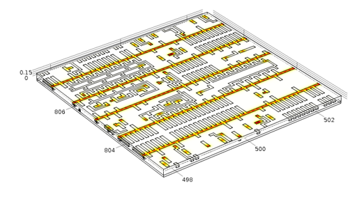
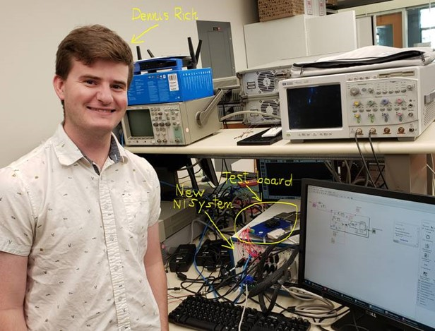
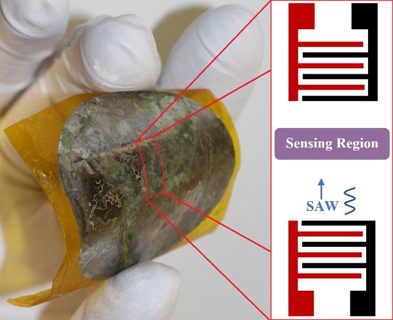
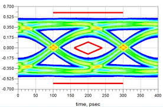

What I'm working on right now...
3rd-year grad student in the Stanford Robust Systems Group with Prof. Subhasish Mitra

Thermal Analysis of Future 3D Nanosystems
Future 3D nanosystems will provide massive latency and energy benefits (see linked presentation), but their thermal behavior is still not well understood. I am performing IC thermal analysis with McPAT, 3D-ICE, COMSOL, Cadence Celsius, Python, and more to quantify the impact of factors like packaging and back-end-of-line conductivity. This analysis motivates my original thermal scaffolding technique, which could allow for 2x stacked compute density using conventional physical design software and fabrication techniques.

Improved Analytical Thermal Model for Interconnects
Back-end-of-line interconnects make up larger and larger portions of an IC stack as more layers are added. The linked paper provides a starting point for the analytical model and framework I developed based on the thermal fin model, allowing layout engineers to quickly understand the impact of their metallization layers on system heating.

1.4 Mb Phase-Change Memory Array Testbench Characterization
I collaborated with TSMC to characterize and test the phase-change memory technology in the linked paper. In particular, I developed a hardware testing environment to investigate new write strategies to store multiple bits per cell despite the natural resistance change of cells over time.
Past Projects
Undergraduate student in the UIUC Innovative Compound Semiconductor Laboratory with Prof. Can Bayram

Flexible Semiconductor Devices
I developed class 1000 cleanroom processes to produce and characterize flexible thin-film devices from brittle materials, devoting over 250 cleanroom hours.

Thin-Film Lithium Niobate Surface Acoustic Wave Transducers
I characterized lithium niobate with atomic force microscopy, X-ray diffraction, Raman spectroscopy, and more to enable development of SAW transducers.
Guest researcher at Northwestern University

Nanopore Waterproofing
I simulated the molecular dynamics of water in a nanoporous system with C++ and Visual Molecular Dynamics. Advised by Prof. Neelesh Patankar.

Carbon Nanotube Thermoelectrics
I investigated carbon nanotube fabrication with chemical vapor deposition, atomic force microscopy, and scanning electron microscopy to optimize their thermoelectric properties. Advised by Prof. Venkat Chandrasekhar.
Design Intern at Silicon Labs

Signal Transmission Integrity Analysis
I designed new splitting techniques to preserve signal integrity in PCB-based transmission lines of phase-locked loops.